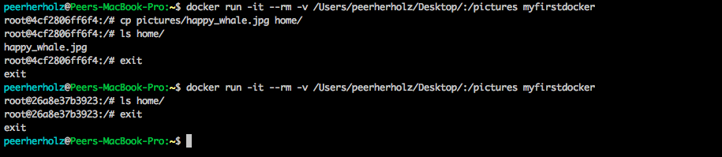

name: inverse layout: true class: center, middle, inverse --- # Automating docker commands ## do it, just do it ### ~45min --- layout: false ##<span style="color:purple">Outline</span> - ### Learning objectives - ### Introduction - ### To automatization and beyond --- ## <span style="color:purple">Learning objectives</span> - ### automatically run rather simple commands - ### automatically run rather complex commands - ### automatically run rather simple commands that require user inputs -- ## <span style="color:purple">Requirements</span> - ### Your computer: `Docker` - ### You: `shell` / `Terminal` --- name: inverse layout: true class: center, middle, inverse --- # Introduction --- layout: false ### <span style="color:purple">Docker automatization</span> - ### so far, we (hopefully) got to know how *docker* works, how *containers* can be downloaded, used and managed, as well as they can be `build` and `pushed` -- - ### IMHO, these are the essentials you have to be familiar with when starting to work with *docker* -- - ### however, docker is of course way more complex and there is an shear endless amount of more specific and advanced stuff we should talk about -- - ### one of those topics is how to get data into our *Docker containers* --- ### <span style="color:purple">Docker automatization</span> - from time to time, it might be advised or even necessary to provide some data that comes with your *Docker container*, e.g. for reproducible purposes, tutorials, etc. -- - but how do we get data into our *Docker containers*? -- - let's say we want to put a picture of whale into our *Docker container* because we're such *docker* fans and whales are nothing but awesome, we know that the state of a given *container* cannot be changed from the *path mounting* part of this workshop  --- name: inverse layout: true class: center, middle, inverse --- # Questions?